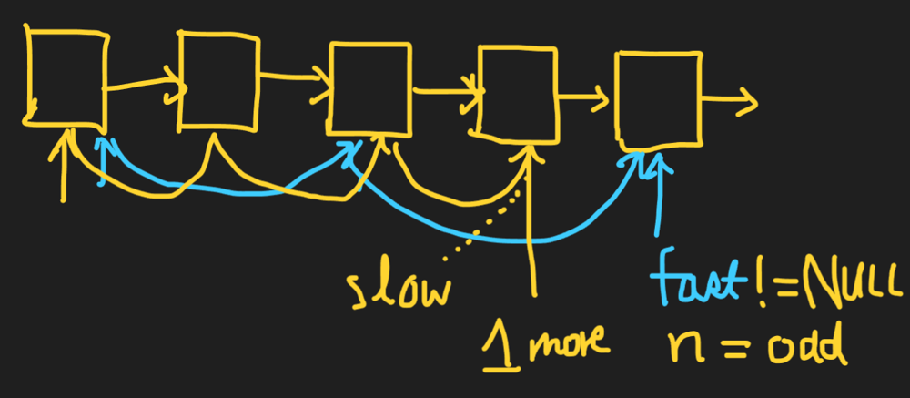
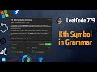
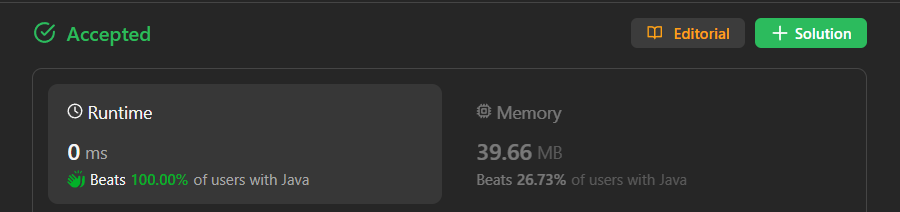

来源：output/index.html 中 vote ≥ 5 的 72 篇候选，逐图查看后再核对正文和代码；仅纳入 60 篇已确认含递归解法的文章。排除 9 篇非递归，3 篇本地代码缺失而待确认。投票是本地抓取快照，并非当前实时票数。
“递归相关图解”包含调用树、栈与返回、递归子问题分解和结构组合；不代表每篇都有完整调用栈。只看到视频封面的文章不评价视频内容。分类依据是图片实际内容，允许一篇有多个标签。
递归解法 · 图片未展示递归过程 · 28 篇
Vote 6 · 流程／数据示意
已核对正文的递归自调用或递归过程；同篇可能同时包含迭代方法。 图解是链表加法流程。
查看全部 3 张图片与逐图判断
Vote 370 · DP／状态转移 · 无关／求赞配图
已核对正文的递归自调用或递归过程；同篇可能同时包含迭代方法。 图解侧重自底向上 DP，含求赞猫图。
查看全部 4 张图片与逐图判断
Vote 6 · 规则／分支示意
已核对正文的递归自调用或递归过程；同篇可能同时包含迭代方法。 图中解释正则匹配规则，没有展示完整调用过程。
查看全部 5 张图片与逐图判断
Vote 79 · 视频封面
已核对正文的递归自调用或递归过程；同篇可能同时包含迭代方法。 已逐图查看；详见逐图标签；视频封面未用于判定视频内容。
查看全部 2 张图片与逐图判断
#017 · 视频封面
仅为 YouTube 缩略图，不能据此确认视频内图解质量#018 · 视频封面
仅为 YouTube 缩略图，不能据此确认视频内图解质量 Vote 8 · 视频封面
已核对正文的递归自调用或递归过程；同篇可能同时包含迭代方法。 已逐图查看；详见逐图标签；视频封面未用于判定视频内容。
查看全部 1 张图片与逐图判断
Vote 11 · 视频封面
已核对正文的递归自调用或递归过程；同篇可能同时包含迭代方法。 已逐图查看；详见逐图标签；视频封面未用于判定视频内容。
查看全部 1 张图片与逐图判断
Vote 5 · 视频封面
已核对正文的递归自调用或递归过程；同篇可能同时包含迭代方法。 已逐图查看；详见逐图标签；视频封面未用于判定视频内容。
查看全部 1 张图片与逐图判断
#041 · 视频封面
仅为 YouTube 缩略图，不能据此确认视频内图解质量 Vote 40 · 视频封面
已核对正文的递归自调用或递归过程；同篇可能同时包含迭代方法。 已逐图查看；详见逐图标签；视频封面未用于判定视频内容。
查看全部 1 张图片与逐图判断
#052 · 视频封面
仅为 YouTube 缩略图，不能据此确认视频内图解质量 Vote 6 · 视频封面
已核对正文的递归自调用或递归过程；同篇可能同时包含迭代方法。 已逐图查看；详见逐图标签；视频封面未用于判定视频内容。
查看全部 1 张图片与逐图判断
Vote 5 · 数学递推／公式推导
已核对正文的递归自调用或递归过程；同篇可能同时包含迭代方法。 已逐图查看；详见逐图标签；视频封面未用于判定视频内容。
查看全部 1 张图片与逐图判断
Vote 206 · 链表指针／结构变化
已核对正文的递归自调用或递归过程；同篇可能同时包含迭代方法。 已逐图查看；详见逐图标签；视频封面未用于判定视频内容。
查看全部 1 张图片与逐图判断
Vote 32 · 链表指针／结构变化 · 视频封面
已核对正文的递归自调用或递归过程；同篇可能同时包含迭代方法。 图解侧重快慢指针与迭代反转。
查看全部 3 张图片与逐图判断
Vote 5 · 链表指针／结构变化
已核对正文的递归自调用或递归过程；同篇可能同时包含迭代方法。 图片只展示迭代反转，标题虽提到递归。
查看全部 1 张图片与逐图判断
 #089 · 链表指针／结构变化
#089 · 链表指针／结构变化
展示链表节点、指针移动、交换或反转；是否递归需结合各篇说明Vote 51 · 视频封面
已核对正文的递归自调用或递归过程；同篇可能同时包含迭代方法。 已逐图查看；详见逐图标签；视频封面未用于判定视频内容。
查看全部 1 张图片与逐图判断
#090 · 视频封面
仅为 YouTube 缩略图，不能据此确认视频内图解质量 Vote 7 · 显式栈 · 链表指针／结构变化
已核对正文的递归自调用或递归过程；同篇可能同时包含迭代方法。 同时有显式栈操作与迭代反转；显式栈不等于递归调用栈。
查看全部 2 张图片与逐图判断
Vote 17 · 链表指针／结构变化
已核对正文的递归自调用或递归过程；同篇可能同时包含迭代方法。 图片为快慢指针与迭代反转。
查看全部 2 张图片与逐图判断

#099 · 链表指针／结构变化
展示链表节点、指针移动、交换或反转；是否递归需结合各篇说明#067 · 链表指针／结构变化
展示链表节点、指针移动、交换或反转；是否递归需结合各篇说明Vote 6 · 视频封面
已核对正文的递归自调用或递归过程；同篇可能同时包含迭代方法。 已逐图查看；详见逐图标签；视频封面未用于判定视频内容。
查看全部 1 张图片与逐图判断
#102 · 视频封面
仅为 YouTube 缩略图，不能据此确认视频内图解质量 Vote 7 · 视频封面
已核对正文的递归自调用或递归过程；同篇可能同时包含迭代方法。 已逐图查看；详见逐图标签；视频封面未用于判定视频内容。
查看全部 1 张图片与逐图判断
#108 · 视频封面
仅为 YouTube 缩略图，不能据此确认视频内图解质量 Vote 27 · 跑分截图 · 无关／求赞配图 · 视频封面
已核对正文的递归自调用或递归过程；同篇可能同时包含迭代方法。 正文图片只有跑分及求赞图，另有视频封面。
查看全部 3 张图片与逐图判断
#125 · 跑分截图
提交通过、运行时间或内存截图，不是算法图解#126 · 无关／求赞配图
表情或求赞配图，不承担算法解释#127 · 视频封面
仅为 YouTube 缩略图，不能据此确认视频内图解质量 Vote 35 · 视频封面
已核对正文的递归自调用或递归过程；同篇可能同时包含迭代方法。 已逐图查看；详见逐图标签；视频封面未用于判定视频内容。
查看全部 1 张图片与逐图判断
#130 · 视频封面
仅为 YouTube 缩略图，不能据此确认视频内图解质量 Vote 6 · 视频封面
已核对正文的递归自调用或递归过程；同篇可能同时包含迭代方法。 已逐图查看；详见逐图标签；视频封面未用于判定视频内容。
查看全部 1 张图片与逐图判断
Vote 8 · 数学递推／公式推导
已核对正文的递归自调用或递归过程；同篇可能同时包含迭代方法。 图解为矩阵快速幂数学推导。
查看全部 4 张图片与逐图判断
Vote 29 · 跑分截图 · 无关／求赞配图 · 视频封面
已核对正文的递归自调用或递归过程；同篇可能同时包含迭代方法。 只有跑分、求赞图与视频封面。
查看全部 3 张图片与逐图判断
#140 · 跑分截图
提交通过、运行时间或内存截图，不是算法图解 #141 · 无关／求赞配图
#141 · 无关／求赞配图
表情或求赞配图，不承担算法解释
#142 · 视频封面
仅为 YouTube 缩略图，不能据此确认视频内图解质量 Vote 10 · 视频封面
已核对正文的递归自调用或递归过程；同篇可能同时包含迭代方法。 已逐图查看；详见逐图标签；视频封面未用于判定视频内容。
查看全部 1 张图片与逐图判断
#178 · 视频封面
仅为 YouTube 缩略图，不能据此确认视频内图解质量 Vote 59 · 跑分截图 · 无关／求赞配图 · 视频封面
已核对正文的递归自调用或递归过程；同篇可能同时包含迭代方法。 只有跑分、求赞图与视频封面。
查看全部 3 张图片与逐图判断

#179 · 跑分截图
提交通过、运行时间或内存截图，不是算法图解#180 · 无关／求赞配图
表情或求赞配图，不承担算法解释#181 · 视频封面
仅为 YouTube 缩略图，不能据此确认视频内图解质量Vote 23 · 约瑟夫过程／编号映射
已核对正文的递归自调用或递归过程；同篇可能同时包含迭代方法。 GIF 演示淘汰故事，没有展开递归。
查看全部 1 张图片与逐图判断
Vote 6 · 约瑟夫过程／编号映射
已核对正文的递归自调用或递归过程；同篇可能同时包含迭代方法。 仅展示约瑟夫淘汰示例。
查看全部 1 张图片与逐图判断
Vote 11 · 视频封面
已核对正文的递归自调用或递归过程；同篇可能同时包含迭代方法。 已逐图查看；详见逐图标签；视频封面未用于判定视频内容。
查看全部 1 张图片与逐图判断
#194 · 视频封面
仅为 YouTube 缩略图，不能据此确认视频内图解质量 递归解法 · 有递归相关图解 · 32 篇
Vote 9 · 递归树／子问题展开 · 无关／求赞配图
已核对正文的递归自调用或递归过程；同篇可能同时包含迭代方法。 已逐图查看；图片展示递归相关分解、调用或返回。
查看全部 3 张图片与逐图判断
Vote 215 · 调用栈／递归返回
已核对正文的递归自调用或递归过程；同篇可能同时包含迭代方法。 已逐图查看；图片展示递归相关分解、调用或返回。
查看全部 2 张图片与逐图判断
Vote 662 · 链表指针／结构变化
已核对正文的递归自调用或递归过程；同篇可能同时包含迭代方法。 已逐图查看；图片展示递归相关分解、调用或返回。
查看全部 1 张图片与逐图判断
Vote 23 · 链表指针／结构变化
已核对正文的递归自调用或递归过程；同篇可能同时包含迭代方法。 同时包含迭代与递归的链表交换图。
查看全部 7 张图片与逐图判断
Vote 23 · 链表指针／结构变化
已核对正文的递归自调用或递归过程；同篇可能同时包含迭代方法。 已逐图查看；图片展示递归相关分解、调用或返回。
查看全部 1 张图片与逐图判断
Vote 7 · 链表指针／结构变化
已核对正文的递归自调用或递归过程；同篇可能同时包含迭代方法。 已逐图查看；图片展示递归相关分解、调用或返回。
查看全部 4 张图片与逐图判断
Vote 7 · 链表指针／结构变化 · 视频封面
已核对正文的递归自调用或递归过程；同篇可能同时包含迭代方法。 已逐图查看；图片展示递归相关分解、调用或返回。
查看全部 2 张图片与逐图判断
Vote 7 · 链表指针／结构变化
已核对正文的递归自调用或递归过程；同篇可能同时包含迭代方法。 已逐图查看；图片展示递归相关分解、调用或返回。
查看全部 1 张图片与逐图判断
Vote 40 · 链表指针／结构变化
已核对正文的递归自调用或递归过程；同篇可能同时包含迭代方法。 本地下载到的是静态 PNG，不能确认标题所称动画。
查看全部 1 张图片与逐图判断
#069 · 链表指针／结构变化
展示链表节点、指针移动、交换或反转；是否递归需结合各篇说明 Vote 6 · 链表指针／结构变化
已核对正文的递归自调用或递归过程；同篇可能同时包含迭代方法。 已逐图查看；图片展示递归相关分解、调用或返回。
查看全部 1 张图片与逐图判断
#070 · 链表指针／结构变化
展示链表节点、指针移动、交换或反转；是否递归需结合各篇说明 Vote 16 · 链表指针／结构变化
已核对正文的递归自调用或递归过程；同篇可能同时包含迭代方法。 已逐图查看；图片展示递归相关分解、调用或返回。
查看全部 1 张图片与逐图判断
#073 · 链表指针／结构变化
展示链表节点、指针移动、交换或反转；是否递归需结合各篇说明 Vote 12 · 链表指针／结构变化 · 无关／求赞配图
已核对正文的递归自调用或递归过程；同篇可能同时包含迭代方法。 已逐图查看；图片展示递归相关分解、调用或返回。
查看全部 3 张图片与逐图判断
#086 · 链表指针／结构变化
展示链表节点、指针移动、交换或反转；是否递归需结合各篇说明#087 · 链表指针／结构变化
展示链表节点、指针移动、交换或反转；是否递归需结合各篇说明#088 · 无关／求赞配图
表情或求赞配图，不承担算法解释 Vote 30 · 链表指针／结构变化
已核对正文的递归自调用或递归过程；同篇可能同时包含迭代方法。 已逐图查看；图片展示递归相关分解、调用或返回。
查看全部 3 张图片与逐图判断
#091 · 链表指针／结构变化
展示链表节点、指针移动、交换或反转；是否递归需结合各篇说明#092 · 链表指针／结构变化
展示链表节点、指针移动、交换或反转；是否递归需结合各篇说明#093 · 链表指针／结构变化
展示链表节点、指针移动、交换或反转；是否递归需结合各篇说明 Vote 14 · 链表指针／结构变化
已核对正文的递归自调用或递归过程；同篇可能同时包含迭代方法。 已逐图查看；图片展示递归相关分解、调用或返回。
查看全部 1 张图片与逐图判断
#094 · 链表指针／结构变化
展示链表节点、指针移动、交换或反转；是否递归需结合各篇说明 Vote 78 · 数学递推／公式推导
已核对正文的递归自调用或递归过程；同篇可能同时包含迭代方法。 已逐图查看；图片展示递归相关分解、调用或返回。
查看全部 1 张图片与逐图判断
#098 · 数学递推／公式推导
快速幂、数列、矩阵或约瑟夫递推关系 Vote 15 · 递归返回／遍历方向
已核对正文的递归自调用或递归过程；同篇可能同时包含迭代方法。 已逐图查看；图片展示递归相关分解、调用或返回。
查看全部 1 张图片与逐图判断
#103 · 递归返回／遍历方向
对比向前迭代与递归回程的遍历方向 Vote 18 · 树结构／组合构造 · 视频封面
已核对正文的递归自调用或递归过程；同篇可能同时包含迭代方法。 已逐图查看；图片展示递归相关分解、调用或返回。
查看全部 3 张图片与逐图判断
#104 · 树结构／组合构造
展示表达式树或满二叉树的分解与组合，区别于函数调用栈#105 · 视频封面
仅为 YouTube 缩略图，不能据此确认视频内图解质量#106 · 视频封面
仅为 YouTube 缩略图，不能据此确认视频内图解质量 Vote 498 · 树结构／组合构造
已核对正文的递归自调用或递归过程；同篇可能同时包含迭代方法。 图是表达式树，展示括号组合，不是函数调用栈。
查看全部 1 张图片与逐图判断
#107 · 树结构／组合构造
展示表达式树或满二叉树的分解与组合，区别于函数调用栈 Vote 20 · 思路推导／子问题缩减 · 递归树／子问题展开 · 代码／文字讲解 · 跑分截图 · 视频封面
已核对正文的递归自调用或递归过程；同篇可能同时包含迭代方法。 有详细递归树、错误切分对比和记忆化说明；另含跑分图与视频封面。
查看全部 15 张图片与逐图判断
#109 · 思路推导／子问题缩减
题目拆解、记忆化、二分镜像与递归参数变化；163 同时含表情配图#110 · 递归树／子问题展开
展示递归分支、子问题展开或层级结构#111 · 代码／文字讲解
手写或截图代码与注释，部分包含边界条件和优化说明#112 · 思路推导／子问题缩减
题目拆解、记忆化、二分镜像与递归参数变化；163 同时含表情配图#113 · 递归树／子问题展开
展示递归分支、子问题展开或层级结构#114 · 递归树／子问题展开
展示递归分支、子问题展开或层级结构#115 · 思路推导／子问题缩减
题目拆解、记忆化、二分镜像与递归参数变化；163 同时含表情配图#116 · 思路推导／子问题缩减
题目拆解、记忆化、二分镜像与递归参数变化；163 同时含表情配图#117 · 递归树／子问题展开
展示递归分支、子问题展开或层级结构#118 · 递归树／子问题展开
展示递归分支、子问题展开或层级结构 #119 · 递归树／子问题展开
#119 · 递归树／子问题展开
展示递归分支、子问题展开或层级结构#120 · 递归树／子问题展开
展示递归分支、子问题展开或层级结构#121 · 跑分截图
提交通过、运行时间或内存截图，不是算法图解#122 · 思路推导／子问题缩减
题目拆解、记忆化、二分镜像与递归参数变化；163 同时含表情配图#123 · 视频封面
仅为 YouTube 缩略图，不能据此确认视频内图解质量 Vote 21 · 递归树／子问题展开
已核对正文的递归自调用或递归过程；同篇可能同时包含迭代方法。 已逐图查看；图片展示递归相关分解、调用或返回。
查看全部 1 张图片与逐图判断
#124 · 递归树／子问题展开
展示递归分支、子问题展开或层级结构 Vote 5 · 树结构／组合构造
已核对正文的递归自调用或递归过程；同篇可能同时包含迭代方法。 已逐图查看；图片展示递归相关分解、调用或返回。
查看全部 1 张图片与逐图判断
#107 · 树结构／组合构造
展示表达式树或满二叉树的分解与组合，区别于函数调用栈 Vote 6 · 递归返回／遍历方向
已核对正文的递归自调用或递归过程；同篇可能同时包含迭代方法。 已逐图查看；详见逐图标签；视频封面未用于判定视频内容。
查看全部 1 张图片与逐图判断
#128 · 递归返回／遍历方向
嵌套字符串的分层展开与合并 Vote 6 · 递归树／子问题展开
已核对正文的递归自调用或递归过程；同篇可能同时包含迭代方法。 已逐图查看；图片展示递归相关分解、调用或返回。
查看全部 1 张图片与逐图判断
#129 · 递归树／子问题展开
展示递归分支、子问题展开或层级结构 Vote 11 · 递归树／子问题展开
已核对正文的递归自调用或递归过程；同篇可能同时包含迭代方法。 已逐图查看；图片展示递归相关分解、调用或返回。
查看全部 1 张图片与逐图判断
#132 · 递归树／子问题展开
展示递归分支、子问题展开或层级结构 Vote 6 · 递归树／子问题展开 · 代码／文字讲解
已核对正文的递归自调用或递归过程；同篇可能同时包含迭代方法。 已逐图查看；图片展示递归相关分解、调用或返回。
查看全部 5 张图片与逐图判断
#144 · 递归树／子问题展开
展示递归分支、子问题展开或层级结构#145 · 递归树／子问题展开
展示递归分支、子问题展开或层级结构#146 · 递归树／子问题展开
展示递归分支、子问题展开或层级结构#147 · 递归树／子问题展开
展示递归分支、子问题展开或层级结构#148 · 代码／文字讲解
手写或截图代码与注释，部分包含边界条件和优化说明 Vote 31 · 递归树／子问题展开
已核对正文的递归自调用或递归过程；同篇可能同时包含迭代方法。 已逐图查看；图片展示递归相关分解、调用或返回。
查看全部 1 张图片与逐图判断
#149 · 递归树／子问题展开
展示递归分支、子问题展开或层级结构 Vote 30 · 树结构／组合构造
已核对正文的递归自调用或递归过程；同篇可能同时包含迭代方法。 展示满二叉树分解组合；不是调用栈。
查看全部 8 张图片与逐图判断
#150 · 树结构／组合构造
展示表达式树或满二叉树的分解与组合，区别于函数调用栈#151 · 树结构／组合构造
展示表达式树或满二叉树的分解与组合，区别于函数调用栈#152 · 树结构／组合构造
展示表达式树或满二叉树的分解与组合，区别于函数调用栈#153 · 树结构／组合构造
展示表达式树或满二叉树的分解与组合，区别于函数调用栈#154 · 树结构／组合构造
展示表达式树或满二叉树的分解与组合，区别于函数调用栈#155 · 树结构／组合构造
展示表达式树或满二叉树的分解与组合，区别于函数调用栈#156 · 树结构／组合构造
展示表达式树或满二叉树的分解与组合，区别于函数调用栈#157 · 树结构／组合构造
展示表达式树或满二叉树的分解与组合，区别于函数调用栈 Vote 14 · 递归树／子问题展开
已核对正文的递归自调用或递归过程；同篇可能同时包含迭代方法。 已逐图查看；图片展示递归相关分解、调用或返回。
查看全部 1 张图片与逐图判断
#158 · 递归树／子问题展开
展示递归分支、子问题展开或层级结构 Vote 9 · 思路推导／子问题缩减 · 代码／文字讲解 · 视频封面
已核对正文的递归自调用或递归过程；同篇可能同时包含迭代方法。 递归参数缩减、镜像反转与返回值推导较完整。
查看全部 18 张图片与逐图判断
#160 · 思路推导／子问题缩减
题目拆解、记忆化、二分镜像与递归参数变化；163 同时含表情配图#161 · 代码／文字讲解
手写或截图代码与注释，部分包含边界条件和优化说明#162 · 代码／文字讲解
手写或截图代码与注释，部分包含边界条件和优化说明#163 · 思路推导／子问题缩减
题目拆解、记忆化、二分镜像与递归参数变化；163 同时含表情配图#164 · 思路推导／子问题缩减
题目拆解、记忆化、二分镜像与递归参数变化；163 同时含表情配图#165 · 思路推导／子问题缩减
题目拆解、记忆化、二分镜像与递归参数变化；163 同时含表情配图#166 · 思路推导／子问题缩减
题目拆解、记忆化、二分镜像与递归参数变化；163 同时含表情配图#167 · 思路推导／子问题缩减
题目拆解、记忆化、二分镜像与递归参数变化；163 同时含表情配图#168 · 思路推导／子问题缩减
题目拆解、记忆化、二分镜像与递归参数变化；163 同时含表情配图#169 · 思路推导／子问题缩减
题目拆解、记忆化、二分镜像与递归参数变化；163 同时含表情配图#170 · 代码／文字讲解
手写或截图代码与注释，部分包含边界条件和优化说明#171 · 思路推导／子问题缩减
题目拆解、记忆化、二分镜像与递归参数变化；163 同时含表情配图#172 · 思路推导／子问题缩减
题目拆解、记忆化、二分镜像与递归参数变化；163 同时含表情配图#173 · 思路推导／子问题缩减
题目拆解、记忆化、二分镜像与递归参数变化；163 同时含表情配图#174 · 思路推导／子问题缩减
题目拆解、记忆化、二分镜像与递归参数变化；163 同时含表情配图#175 · 思路推导／子问题缩减
题目拆解、记忆化、二分镜像与递归参数变化；163 同时含表情配图#176 · 思路推导／子问题缩减
题目拆解、记忆化、二分镜像与递归参数变化；163 同时含表情配图#177 · 视频封面
仅为 YouTube 缩略图，不能据此确认视频内图解质量 Vote 37 · 数学递推／公式推导
已核对正文的递归自调用或递归过程；同篇可能同时包含迭代方法。 已逐图查看；图片展示递归相关分解、调用或返回。
查看全部 1 张图片与逐图判断
#182 · 数学递推／公式推导
快速幂、数列、矩阵或约瑟夫递推关系 Vote 18 · 约瑟夫过程／编号映射
已核对正文的递归自调用或递归过程；同篇可能同时包含迭代方法。 已逐图查看；图片展示递归相关分解、调用或返回。
查看全部 8 张图片与逐图判断
#183 · 约瑟夫过程／编号映射
环形淘汰、重新编号与映射；191 为淘汰动画#184 · 约瑟夫过程／编号映射
环形淘汰、重新编号与映射；191 为淘汰动画#185 · 约瑟夫过程／编号映射
环形淘汰、重新编号与映射；191 为淘汰动画#186 · 约瑟夫过程／编号映射
环形淘汰、重新编号与映射；191 为淘汰动画#187 · 约瑟夫过程／编号映射
环形淘汰、重新编号与映射；191 为淘汰动画#188 · 约瑟夫过程／编号映射
环形淘汰、重新编号与映射；191 为淘汰动画#189 · 约瑟夫过程／编号映射
环形淘汰、重新编号与映射；191 为淘汰动画#190 · 约瑟夫过程／编号映射
环形淘汰、重新编号与映射；191 为淘汰动画 Vote 17 · 数学递推／公式推导
已核对正文的递归自调用或递归过程；同篇可能同时包含迭代方法。 已逐图查看；图片展示递归相关分解、调用或返回。
查看全部 1 张图片与逐图判断
#192 · 数学递推／公式推导
快速幂、数列、矩阵或约瑟夫递推关系